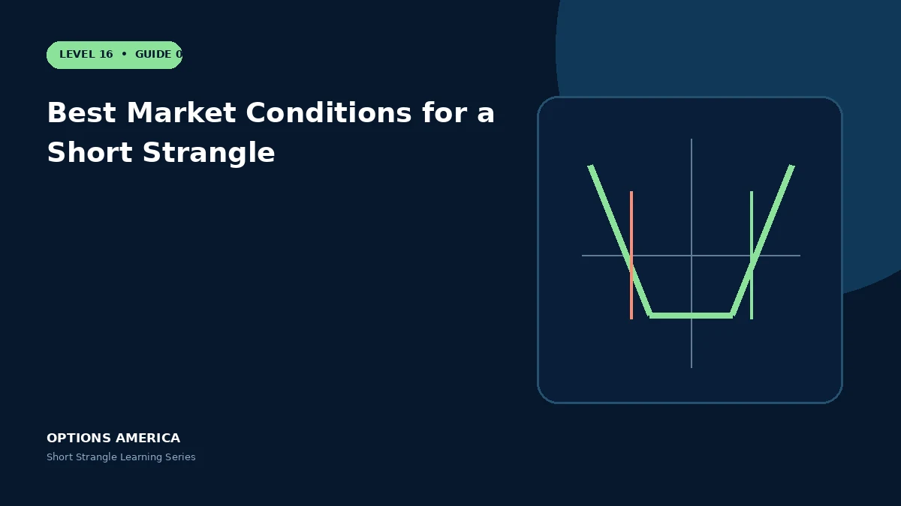

Assess implied versus realized volatility, catalysts, liquidity, trend and portfolio exposure before selling a strangle.
Volatility edge
Compare implied movement with a range of realized scenarios and volatility risk premium, not a single historical average. High IV may correctly anticipate a large move.
Trend and catalysts
Strong trends and binary announcements can move price rapidly toward or through a short strike. Decide which events are deliberately included in the holding period.
Market quality
Liquid chains support two-leg entries, rolls and exits. A wide market can turn a small statistical edge into poor realized execution.
Portfolio fit
Avoid stacking similar short puts or calls across correlated assets. Stress the whole portfolio for a common volatility shock and directional gap.
A practical example
A diversified index has liquid options, elevated IV and no scheduled binary event during the planned holding period. The trade is still sized against a gap beyond either strike.
This simplified scenario focuses on selected outcomes; live prices and risks will differ. Live option prices also reflect the underlying price, time decay, rates, dividends, liquidity and transaction costs. Greeks are theoretical estimates, not guarantees.
Build a risk-first trading plan
Before using best market conditions for a short strangle, record the stock price, put and call strikes, expiration, total credit and contract multiplier. Calculate both breakevens, then estimate dollar loss beyond them under upside and downside gaps. A wide strike range improves the starting room but does not define either tail.
Stress several prices, time points and volatility levels, including a skew change that affects the put and call differently. Review delta, gamma, theta, vega and buying power for the complete portfolio. Multiple OTM positions can become tested together during a common market shock.
Define a profit target, maximum tolerated loss, tested-side trigger, margin reserve and latest exit date before entry. Decide whether an event is intentionally included and how assignment would be handled. Use multi-leg orders and confirm quantities after every fill, roll or partial close.
Document the result after exit, including slippage, assignment effects and the largest intraday exposure. Comparing the original forecast with the actual path helps distinguish a sound process from a lucky outcome and improves later strike, duration, margin-reserve and position-size choices under similar market conditions.
Frequently asked questions
Is a range forecast enough?
No; volatility, liquidity and tail loss also matter.
Why check correlation?
Many positions can become tested together.
Can high IV be justified?
Yes.
Continue the Short Strangle cluster
Explore related guides: Implied Volatility and the Short Strangle · Short Strangle Margin and Buying Power · How a Short Strangle Works. For a structured sequence, use the free Level 16 – Short Strangle course.
Options involve risk and are not suitable for every investor. This material is educational and is not investment, tax or legal advice. Greeks are theoretical estimates, and contract terms and broker requirements can vary.